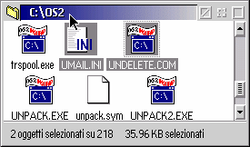

Classe: XFolder
XFolder offre (secondo me) le migliori barre di stato per le cartelle disponibili,
completamente configurabili dalla pagina "Barre di stato" nel nuovo oggetto
"Workplace Shell" ed attivabili/disattivabili
individualmente per ogni cartella.
Nota: all'avvio le barre di stato sono disabilitate, per
evitare sovrapposizioni indesiderate nel caso si disponga gi… di un software che
le aggiunge. Per attivarle si usi l'oggetto
"Workplace Shell", ma prima ci si assicuri
che la stessa funzione non sia gi… garantita da qualche altro programma,
altrimenti il risultato sar… imprevedibile!

Le barre di stato operano in tre modi, dato che mostrano informazioni
differenti a seconda di quanti oggetti sono selezionati nella cartella:
- "Nessun oggetto selezionato": vale se nessun oggetto Š selezionato.
Come valore assunto viene mostrato il numero totale di oggetti nella cartella e la loro
dimensione totale, insieme allo spazio libero sul disco che contiene la cartela.
- "Un solo oggetto selezionato": si ha quando viene selezionato un oggetto.
A seconda della classe dell'oggetto vengono mostrate informazioni differenti.
Per esempio, cartelle e file di dati mostreranno informazioni del file system
(nome effettivo, classe, dimensioni, data e ora).
- "Pi— oggetti selezionati": valido quando pi— di un oggetto viene selezionato.
Come valore assunto viene mostrato il numero di oggetti selezionati, il numero totale
degli oggetti nella cartella e la somma delle dimensioni degli oggetti selezionati
(come nell'immagine qui sopra).
Per ognuno dei tre modi si pu• configurare liberamente ci• che verr… mostrato
nelle barre di stato, come spiegato in dettaglio nella pagina
"Configurare le barre di stato".